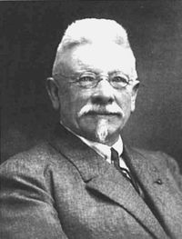

Wednesday, March the 14th, 2007
back to: title, date or indexes

This is Jef Denyn, founder of the world's first and most renowned institute of higher campanology. Mr Denyn was particularly skilled at using his fists and feet to elicit sounds from a carillon.
Never complain that Hooting Yard doesn't teach you a thing or two.